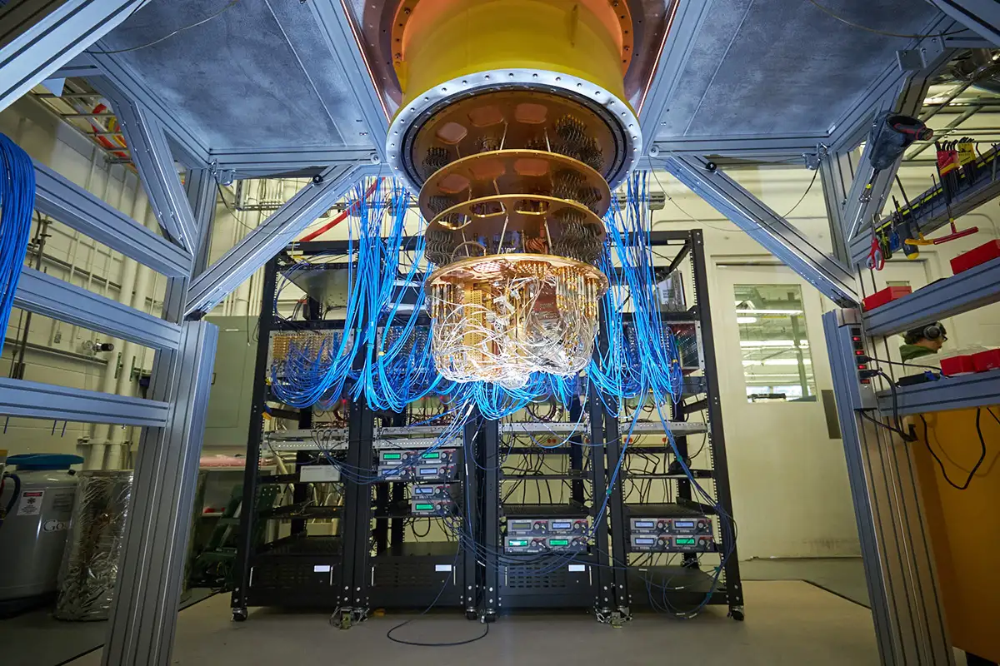

Gif of a simple quantum circuit with the outputs being qubits exhibiting a superposition of states
Quantum computing is a rapidly emerging field of computer science concerned with harnessing the laws of quantum mechanics and its' phenomena such as superposition, interference, and entanglement to solve problems far too complex for classical computers. Similarly to how classical computers operate using bits (binary digits) which represent a single binary value, such as 0 or 1, quantum computers operate using qubits (quantum bits). These qubits use the quantum mechanical phenomena of superposition to achieve a linear combination of the two states. This means that a qubit can represent a 0, a 1, or any proportion of 0 and 1 in superposition of both states with a certain probability of being a 1 and a certain probability of being a 0.

Google's Sycamore Quantum Computer
One of the main advantages of this technology is that superposition provides quantum computers with superior computing power. This is demonstrated by the fact that the amount of information
a qubit system can represent grows exponentially e.g. information that can be represented by 500 qubits would not be possible with even more than 2^500 classical bits.
This however, is a difficult feat to achieve due to the complex logistics involved in operating a quantum computer. One of the biggest difficulties surrounding quantum computing is the need to cool the
quantum processor down to near-absolute-zero temperatures. This requires both an incredible amount of engineering to create the unique components & cooling solutions but additionally introduces large operating costs. To make things worse, due to their
complexity, they are currently tailored to solving one specific problem such as a combinatorics problem, prime factorization using Shor's Algorithm or even molecule simulation.
Due to the nature of quantum mechanics and qubits, environmental factors can soon produce errors which may lead to the qubits losing their quantum state. These errors multiply/scale with levels of complexity meaning that for quantum computers to reach their true potential, a solution for error correction is necessary.
Image of a chymotrypsin digestive enzyme molecule
Currently, the field of quantum computing is still mostly in development with only a select few being commercially available such as the D-Wave Quantum Computer or the more recent IBM Q System One.
One of the main prospective areas that quantum computers can thrive in, is chemical and biological engineering which involve the discovery and manipulation of organic molecules. Doing so involves the motion and interaction of subatomic particles - quantum mechanics.
As molecules get more and more complex, they become increasingly difficult to simulate and the number of possible configuartions grows exponentially. It essentially becomes a combinatorics problem - something quantum computers have already demonstrated that they are really good at by simulating simple chemical reactions.
As quantum computers become more computationally capable, they will be able to predict the properties of new molecules and engineers wil be able to consider molecule configurations far too complex for a classical computer. This means quantum computers will play a vital role in accelerating current efforts in material discovery and drug development.